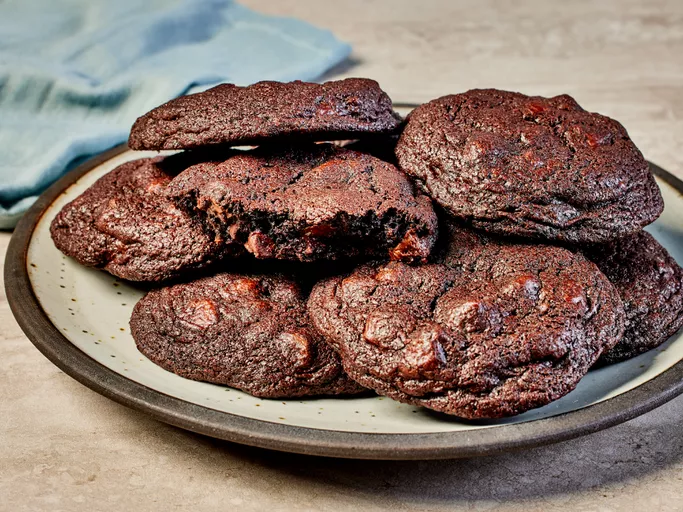

Chocolate Cookies

These chocolate chocolate chip cookies are made
with cocoa powder
and chocolate chips to guarantee
chocolaty flavor in every bite.
My kids love them!
This recipe is easy to make and delicious for your
mind and body.
Caution! You will probably eat
them all by yourself because of the deliciousness.
You won't be able to help yourself!
Ingredients
- Sugar: 1 cups white sugar
- Butter: 1 cup butter, softened
- Eggs: 2 large eggs
- Vanilla: 2 teaspoons vanilla extract
- Flour: 2 cups all purpose flour
- Cocoa powder: ⅔ cup cocoa powder
- Baking soda: ¾ teaspoon baking soda
- Salt: ¼ teaspoon salt
- Chocolate Chips: 2 cups chocolate chips
Steps
- Gather all ingredients and preheat the oven to 350 degrees F (175 degrees C)
- Beat sugar, butter, eggs, and vanilla in a large bowl until light and fluffy.
- Combine flour, cocoa powder, baking soda, and salt in another bowl; stir into butter mixture until well blended.
- Mix in chocolate chips and walnuts. Drop spoonfuls of dough 2 inches apart onto ungreased cookie sheets.
- Bake in the preheated oven just until set, 8 to 10 minutes. Cool slightly on the cookie sheets before transferring to wire racks to cool completely.
- Enjoy!
Home